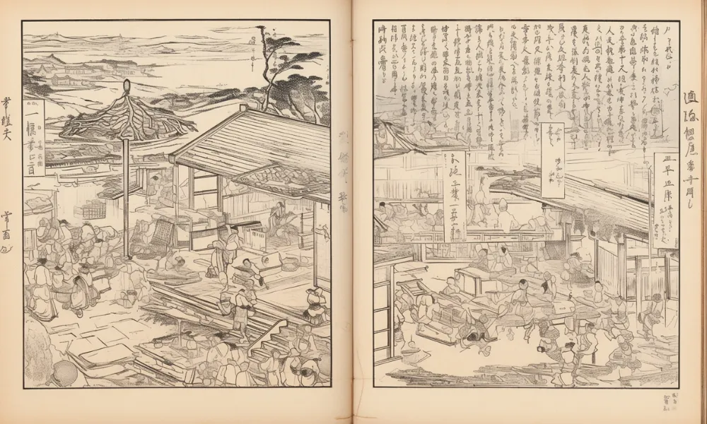
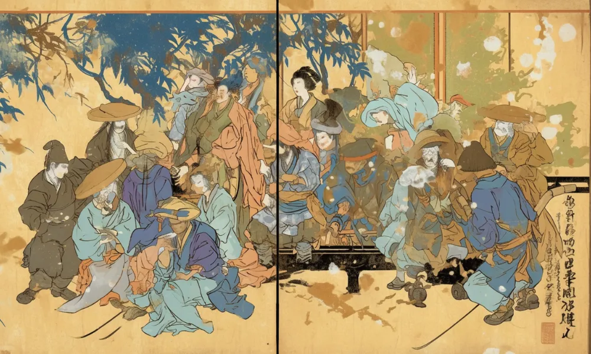

蔦屋重三郎
江戸のメディア王
印刷屋
蔦屋重三郎は黄表紙や狂歌本をはじめ様々な出版物を出した。
メディア王
江戸時代にたくさんの人を喜ばせた蔦屋重三郎は「メディア王」と呼ばれる。


[人物プロフィール]
生没年
1750年～1797年
時代
江戸時代
身分
商人

江戸の本屋さんで、ベストセラーを連発してたんだ。
 蔦屋重三郎ってどんなひと？
蔦屋重三郎ってどんなひと？
江戸時代の出版業者で、浮世絵や文学作品を多く出版しました。彼の努力により、多くの芸術家や作家が育ちました。重三郎は、文化の普及と発展に大きく貢献しました。
コラム
（カード右上）命の幕引きを告げる拍子木がまだ鳴らないな。
カードの効果解説！
黄表紙
黄表紙は、江戸時代の庶民向けの読み物で、軽い内容の小説や風刺画が多く載っています。人気作家の山東京伝が多くの作品を発表し、人々に愛されました。江戸の街角では、黄表紙を手に取る人々で賑わっていました。
狂歌本
狂歌本は、江戸時代に流行した滑稽な詩や風刺詩を集めた本です。庶民の生活や政治をユーモラスに描いており、多くの人々に親しまれました。狂歌の才能ある詩人たちが活躍しました。

弥生時代ってどんな時代？
弥生時代ってこんな時代 ってのをなんとなく。時代かぶってたりしたら関連人物 との繋がりについて纏める感 じで。弥生時代ってこんな時代 ってのをなんとなく。時代かぶってたりしたら関連人物 との繋がりについて纏める感 じで。


クイズ！：蔦屋重三郎が江戸時代に出版したものはなんでしょう？